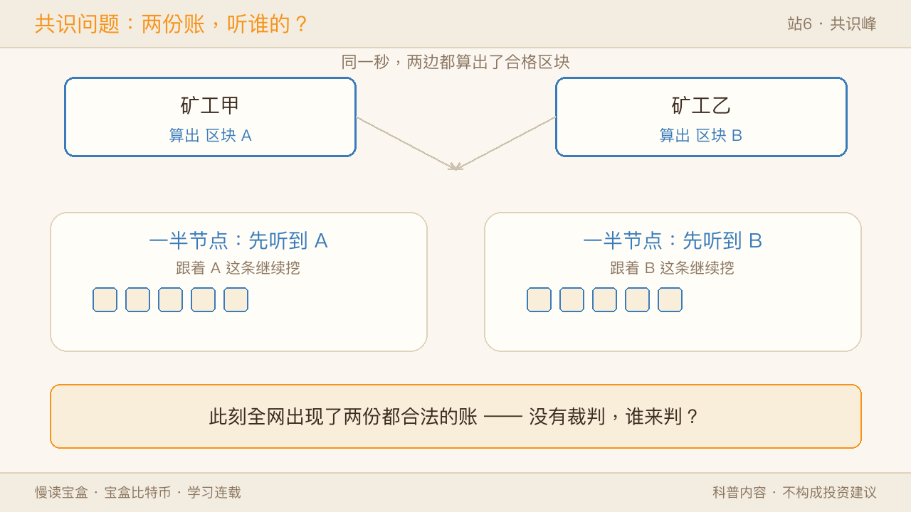
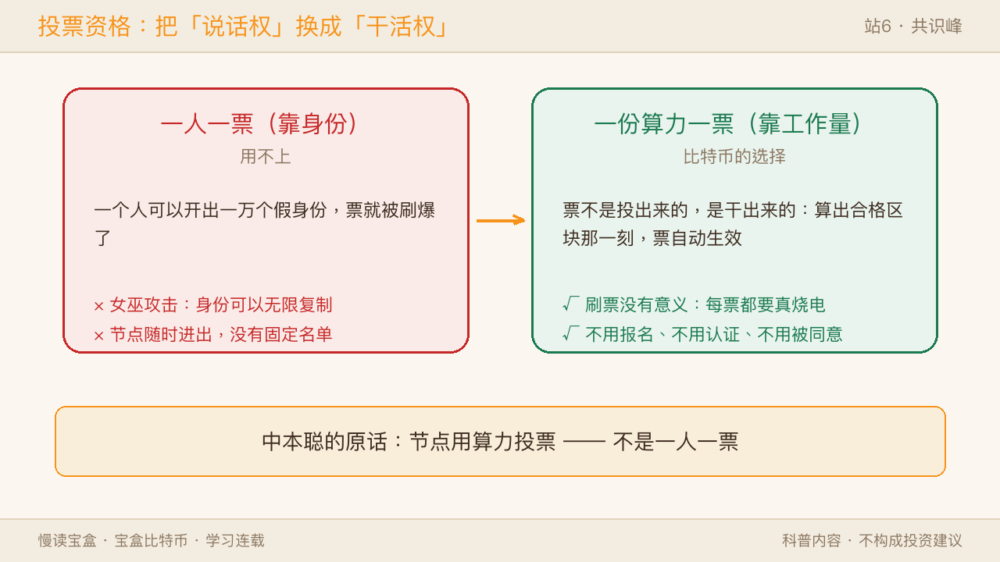
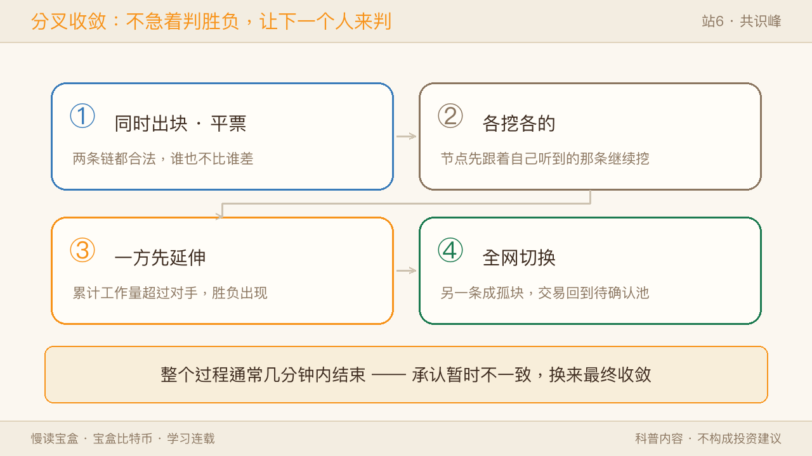
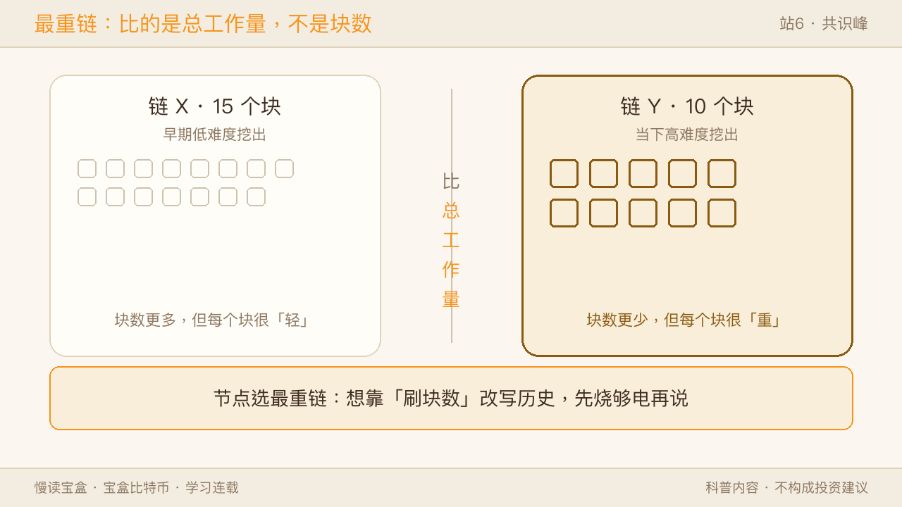
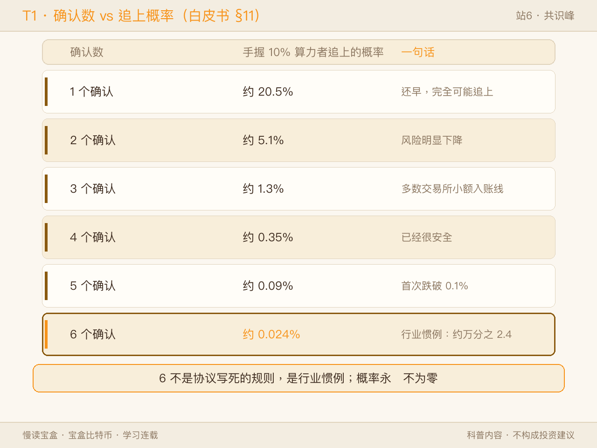
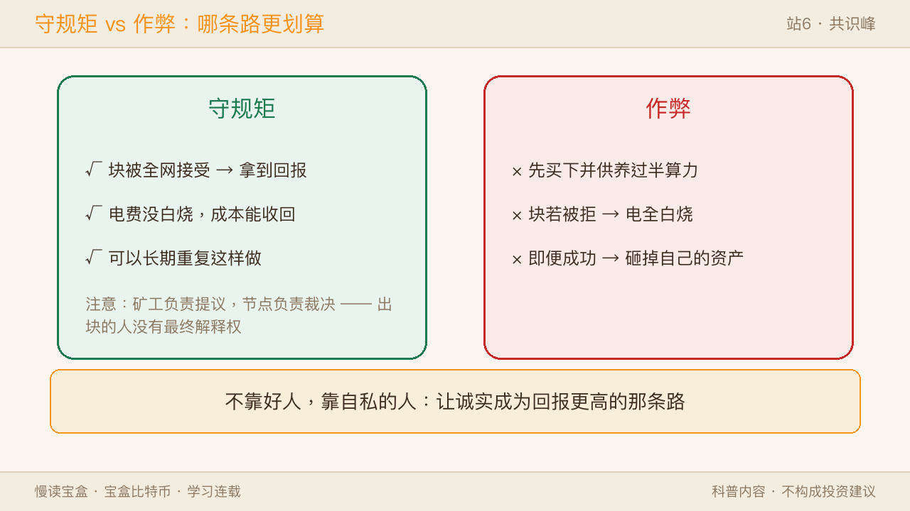
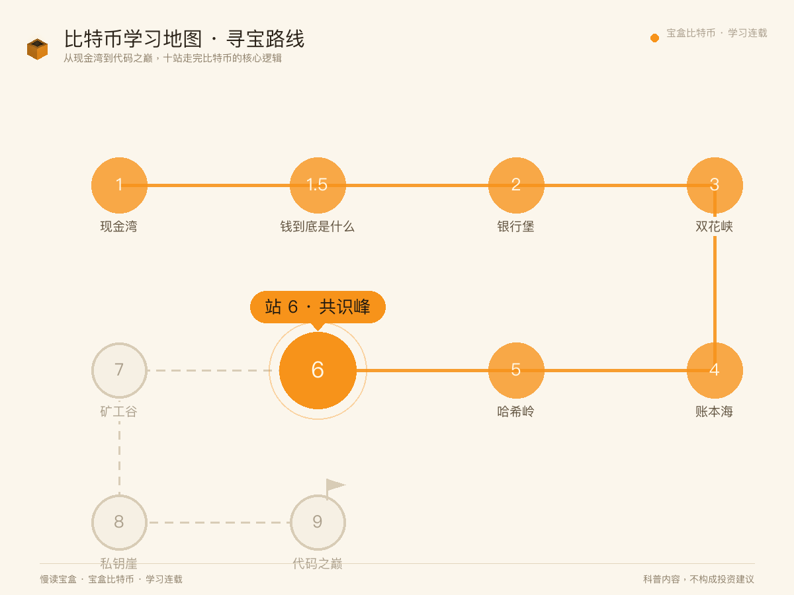
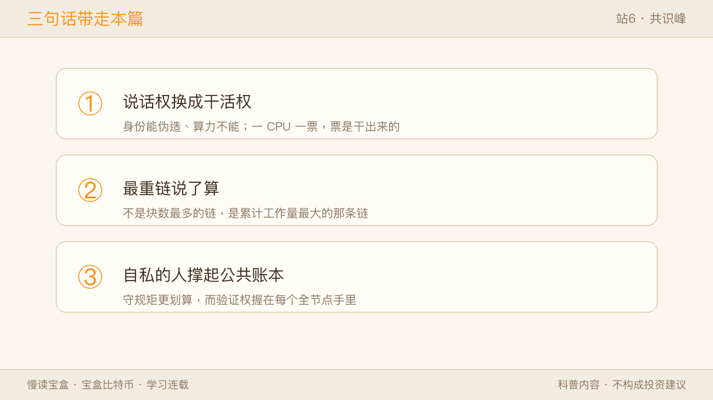

站 5「哈希岭」我们拆开了那台造指纹的机器：改一个字就翻脸，让账本"改不动"。可还剩最后一道坎——全网几万台机器，每人手里一本账，两份账不一样的时候，听谁的？
现实世界里这个问题有个现成答案：听裁判的。银行说了算，数据库主节点说了算。比特币偏偏没有裁判。这一站「共识峰」，我们看这套没有裁判的投票机制。

一、问题：没有裁判，"谁的账是对的"谁说了算
站 4「账本海」做了一个大胆的决定：不要主账本，让每个人持有完整副本。可副本一多，分歧就来了。
两个矿工，几乎在同一秒算出合格区块，各自广播。网络一半的人先听到 A，一半先听到 B。两条链都合法，此时的全网是"平票"的。
传统系统怎么解？很简单——有个"主"。银行有数据库主节点，分布式系统有选举出来的 leader，反正总能找出一个说了算的角色。比特币不要这个角色。
这就是分布式系统里那道著名的难题：一群人分散各处、互不完全信任，其中还可能有故意捣乱的，怎么保证大家最终行动一致？学术界给它起了个名字叫拜占庭将军问题。
传统的解法是"多轮投票 + 成员名单"：先确认一共有谁参与，再一轮轮投票达成一致。这条路走得通，但有个前提——成员名单是已知的、相对稳定的。比特币不满足这个前提：节点随时进、随时出，不需要报名，也不需要暴露身份。
✅ 像的地方：像一个没有主持人、没有签到表的广场集会。谁都可以来，谁都可以走，谁也不认识谁，但所有人约定同一条规矩：跟着人最多的那支队伍走。 ⚠️ 不一样的地方：广场上"人最多"靠眼睛数；比特币不能数人头——因为一个人可以开出一万个假身份（这在技术上叫女巫攻击）。所以它把"数人头"换成了"称重量"。
这个"换法"，就是比特币真正的发明。
二、先换掉投票资格：把"说话权"变成"干活权"
既然身份不能当投票资格（能伪造、能无限开小号），那就换成一种伪造不了、只能真花成本去挣的东西——工作量。
想出块？先做一道没有捷径的题。站 5 讲过：不断掷骰子，直到撞出一个前导零够多的哈希。这道题很难做，但做出来的答案，别人一秒钟就能验完。
中本聪在白皮书里的原话是：节点"用算力投票"——不是一人一票，是一份算力一票。
这套办法后来有个通用的学名：工作量证明（Proof of Work，简称 PoW）。之后你在别处看到这几个词，指的就是上面这套流程。
这里有个很容易滑过去的关键点：票不是投出来的，是干出来的。 你不用报名，不用被认证，也不用别人同意；你算出合格区块的那一刻，你的票自动生效。而每一张票背后都烧着真实的电，所以"刷票"毫无意义——刷得越多，烧的钱越多。

✅ 像的地方：像一场"谁先跑到终点，谁就拿到话筒"的比赛。资格不看出身、不看证件，只看你有没有真的跑完那十圈。 ⚠️ 不一样的地方：跑步可以请人替跑。这里的"跑"是数学题，且答案里绑着你打包的那批交易——谁把这个块写进链，记账的回报就归谁，没法把功劳转让出去。
三、两人同时算出怎么办：临时分叉，然后自己收敛
回到开头的场景。A、B 两个块几乎同时出现，网络短暂分裂成两派。
比特币的处理方式很"笨"，也很有效：不急着当场判胜负，让下一个人来判。
- 两条链都合法，节点各自保留，先跟着自己听到的那条继续挖。
- 一旦某一方先挖出了下一个块，它这条链的"累计工作量"就超过对手了。
- 全网切到更重的那条，另一条被放弃，它上面的块成为孤块。
- 整个过程通常在几分钟内结束。
这里必须澄清一个流传很广的说法：孤块里的交易不是作废，更不是丢了。 它们只是回到"待确认"状态，重新排队，等下一个区块来收。真正受影响的只有一件事——"那一刻你以为自己收到了钱"，所以收款方需要等几个确认（第五节讲）。
频率上，单块重组偶尔会发生，两块重组很少见，三块以上在没有蓄意破坏、没有严重网络中断的情况下极为罕见。

✅ 像的地方：像山里两条岔路，后来的人总是走脚印更密那条；走的人少的那条慢慢长草，就没人再走了。 ⚠️ 不一样的地方：现实里被放弃的小路上的行人得原路折返。比特币里孤块上的交易不用"折返"——它们只是回到候车室，下一班车照样能上，不需要任何人批准。
四、常见误解：最长链，不是"区块最多的那条"
很多科普（包括一些教程）会写："比特币选最长的链。"这个说法在今天不严谨，值得纠正一下，因为它会让你在遇到攻击场景时想错。
准确的表述是：节点选累计工作量最大的那条链，技术圈叫最重链（chainwork）。
白皮书第 5 节用的确实是 "longest chain" 这个词，但落到实现里，每个区块的难度并不相同，所以比的不是块数，而是"这条链上一共烧掉了多少算力"。
举个极端例子：一条链有 15 个块，但都是很早期、难度极低时挖出来的；另一条只有 10 个块，全是当下高难度挖的。后者更重，赢。
为什么这个差别要紧？ 如果只比块数，有人可以在难度低的时段偷偷造一大堆块来"刷长度"，把历史挤掉。改成比总工作量，这条路就堵死了——你造多少块都得真烧电，谁也别想用数量糊弄重量。

✅ 像的地方：像托运行李称重——不看你有几件行李，只看总重量几公斤。 ⚠️ 不一样的地方：行李重量是秤称出来的，这里的"重量"是每台机器各自算出来的。但因为规则统一、数据公开，几万台机器算出的数字必然一致，不需要第三方来公证。
五、确认数：为什么大家要等 6 个？
你的交易进了区块，叫 1 个确认；后面每多一个块，多一个确认。为什么要等？
因为理论上，有人可以偷偷另挖一条更重的链，把你那笔交易挤掉（这就是站 3 讲的双花）。中本聪在白皮书第 11 章算过这笔账：假设有人掌握全网 10% 的算力，他偷偷追赶、想反超的概率，会随着确认数指数下降。
| 确认数 | 手握 10% 算力的人追上的概率 |
|---|---|
| 1 | 约 20.5% |
| 2 | 约 5.1% |
| 3 | 约 1.3% |
| 4 | 约 0.35% |
| 5 | 约 0.09% |
| 6 | 约 0.024% |

这就是"6 个确认"的由来：中本聪把线画在了 0.1% 以下。但有两点必须说清楚：
- 6 不是协议写死的规则，是行业惯例。 很多交易所在小额入账时 3 个确认就放行。
- 比特币是概率最终性：概率永远不会降到 0，只会小到可以忽略。
✅ 像的地方：像刚浇好的水泥地——刚浇完能踩出脚印，等得越久越硬，一小时后就踩不动了。 ⚠️ 不一样的地方：水泥终会彻底硬化，从此不可能再留痕；比特币的概率永远不为零，只是降到"比连续被雷劈还不可能"。工程上可以忽略，数学上仍不为零。
六、没有裁判，凭什么不怕坏人：自私反而成了护栏
到这里可以回答这一站的中心问题了。没有裁判，靠的不是道德，是让守规矩比作弊更划算。
矿工只有在"自己出的块被全网接受"时才能拿到回报。你打包了一笔无效交易？每个全节点直接拒绝这个块，你的电就白烧了。
那如果有人铁了心要作弊呢？他得先买下并维持超过一半的算力。就算他真做到了，能干的事也是有边界的：
| 能做的 | 做不到的 | |
|---|---|---|
| 交易 | 把自己近期花出去的钱重新排列（双花自己刚花的钱） | 花别人的币（需要对方的私钥，站 8 讲） |
| 记账 | 暂时不让某些交易进块（审查） | 凭空造币、改掉 2100 万的总量规则 |
| 规则 | —— | 逼全网接受一个无效块（验证权在每个全节点手里） |
| 代价 | 买下并持续供养过半算力 | 作弊一旦成功，比特币信誉崩塌，他也砸掉了自己手里的资产 |
请注意表里那句"验证权在每个全节点手里"——这是整套设计里容易被忽略的一环：矿工负责提议，节点负责裁决。 出块的人没有最终解释权。
而这一站最反直觉的结论也在这里：
比特币不靠好人，靠自私的人。
每个矿工都在为自己赚钱，没人被要求高尚。但这些自私行为叠加在一起，恰好让这本公共账本变得难以篡改——你想改，就得烧比全网还多的电；而改成功之后，你毁掉的是自己手里那些机器和币的价值。

✅ 像的地方：像让看守自己也持有股份——他越是想让自己那份值钱，就越会认真守门。 ⚠️ 不一样的地方：看守可能被收买，也可能突然不理性。所以这不是数学保证，是经济约束——它假设参与者是理性逐利的。这个假设在现实中站得住，但你得知道它是假设，而不是定理。
七、回到地图（启下矿工谷）
回到这张 10 站学习地图——站 1 现金湾见了比特币是什么；站 2 银行堡看清它要取代什么；站 3 双花峡看它怎么按住双花；站 4 账本海看它用什么承载这笔账；站 5 哈希岭拆开了造指纹的机器；本站共识峰，我们补上了最后一块工程拼图——没有裁判的时候，全网靠"工作量投票 + 最重链 + 等待确认"收敛到同一份账。

还有一群人始终没登场：那些真金白银买机器、按月交电费、日日夜夜掷骰子的人。他们为什么愿意干？算力连年增长，凭什么还能稳定在大约 10 分钟一个块？下一站「矿工谷」，我们下到山谷里看看。
三句话带走本篇：
